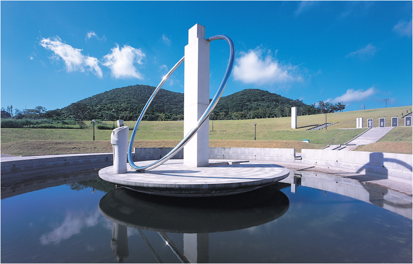
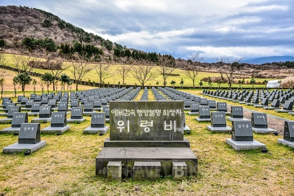

평화공원
“4·3사건의 역사적 의미를 되새겨 희생자의 명예회복 및 평화·인권의 의미와 통일의
가치를 되새길 수 있는 평화와 통일의 성지이자 인권교육의 장”
-

4·3사건으로 인한 제주도 민간인학살과 제주도민의 처절한 삶을 기억하고 추념하며, 화해와 상생의 미래를 열어 가기 위한 평화·인권기념 공원입니다. 제주4·3평화공원 조성은 제주4·3사건에 대한 공동체적 보상의 하나로 이루어졌습니다.
-
1980년대 말 4·3진상규명운동에 매진하던 민간사회단체 등은 진상규명과 함께 지속적으로 위령사업을 요구하였으며 이런 요구에 부응하여 제주도는 1995년 8월 위령공원 조성계획을 발표하였습니다. 이에 몇 년이 지나 2003년 4월 3일 평화공원 기공식이, 2008년 3월 28일 평화기념관이 개관하게 되었습니다.

관람정보
입장료: 무료
관람시간: 09:00 ~18:00
휴관일: 매월 첫째, 셋째 월요일 휴관
관람문의: 064-710-8461
오시는 길
주소 : 제주특별자치도 제주시 명림로 430
시내버스: 제주공항에서 500번 공항버스 이용, 중앙로에서 하차 후, 현대약국 앞 조천방면 정류장에서 1번 공영버스 탑승 (50분 소요)
택시: 제주공항에서 소요시간 40분, 20,000원 내외